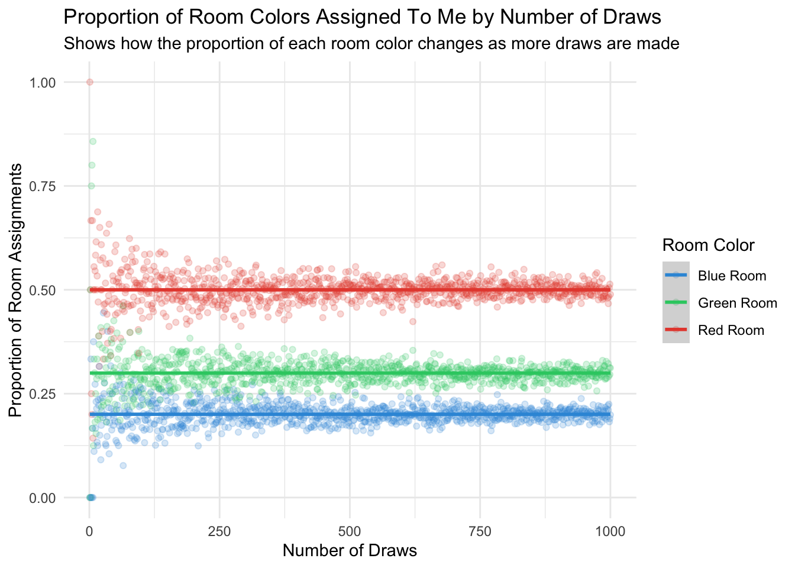

library(tidyverse)Campus Room Draw Permutation
Understanding the complexity of room draw
 Photo by Ryan Jacobson on Unsplash
Photo by Ryan Jacobson on Unsplash
Link to Slides Explaining Experiment
Experiment
I plan to simulate the likelihood of getting my preferred room in a room draw. There are three types of rooms: red, blue, and green. My preference for these rooms is in that order, with 60% of people preferring red rooms, 30% preferring blue rooms, and 10% preferring green rooms. Each room type has a specific occupancy: there are 30 red rooms, 30 blue rooms, and 40 green rooms. In total, there are 100 students in this experiment. My goal is to determine the probability of me ending up with each type of housing. The order of turns in the room draw is assigned randomly.
Library
Only the tidyverse was used, specifically the purrr, ggplot2, and dplyr packages.
Helping Functions
room_pref generates a list of preferred room types for each individual.
room_pref <- function(red_p, blue_p, green_p) {
dorms <- c("red", "blue", "green")
prob <- c(red_p, blue_p, green_p)
sample(dorms, size = 3, replace = FALSE, prob = prob)
}space_identifier assists the room_assignment function and is specifically designed to check whether an individual’s room preference can be accommodated based on the current occupancy of rooms.
space_identifier <- function(color_pref, room_occ, r_rooms, b_rooms, g_rooms) {
occ <- c(r_rooms, b_rooms, g_rooms)
colors <- c("red", "blue", "green")
color_num <- match(color_pref, colors)
if (occ[color_num] < room_occ[color_num]) {
return(colors[color_num])
}
return("no")
}room_assignment iterates through each of an individual’s preferences until they are assigned to a room.
room_assignment <- function(pref_order, room_occ, r_rooms, b_rooms, g_rooms) {
for (pref in pref_order) {
room <- space_identifier(pref, room_occ, r_rooms, b_rooms, g_rooms)
if (room != "no") return(room)
}
}my_room simulates a single room draw, where I am assigned to a room. It assigns people to rooms until my turn, then assigns me to my preferred room that is still available. Finally, it returns the room I am assigned to.
my_room <- function(lottery_num, pref_probs, room_occ) {
r_rooms <- 0
b_rooms <- 0
g_rooms <- 0
my_room_color <- ""
map(1:lottery_num, function(num) {
if (num == lottery_num) {
my_room_color <<- room_assignment(c("red", "blue", "green"), room_occ, r_rooms, b_rooms, g_rooms)
}
# Getting Individual Room Prefs
pref_order <- room_pref(pref_probs[[1]], pref_probs[[2]], pref_probs[[3]])
room <- room_assignment(pref_order, room_occ, r_rooms, b_rooms, g_rooms)
if (room == "red") {
r_rooms <<- r_rooms + 1
}
if (room == "blue") {
b_rooms <<- b_rooms + 1
}
if (room == "green") {
g_rooms <<- g_rooms + 1
}
})
return(my_room_color)
}This function is designed solely to facilitate finding the proportions of a list, making it easier to create a tibble of the proportions for each draw.
# Define the function to calculate proportion
calculate_proportion <- function(input_list, value) {
# Calculate the proportion of 'value' in 'input_list'
prop <- sum(input_list == value) / length(input_list)
return(prop)
}The room_draws function will be the one we ultimately work with. It returns a tibble showing the proportion of assigned dorm colors based on the number of draws.
room_draws <- function(draws, pref_probs, room_occ) {
room_given <- map(1:draws, function(draw) {
lottery_num = sample(1:sum(room_occ), 1, replace = FALSE)
my_room(lottery_num, pref_probs, room_occ)
}
) |>
unlist()
tibble(
draws = c(draws),
red = c(calculate_proportion(room_given, "red")),
blue = c(calculate_proportion(room_given, "blue")),
green = c(calculate_proportion(room_given, "green"))
)
}Data Preparation
We can now use our function to generate a dataset based on the experiment we are interested in. The function could also be applied to explore various scenarios, such as how the outcome might change if you wanted to live with someone and were willing to accept a worse room in order to be with them, or if partnering with them would allow you to secure a higher room number. However, for simplicity, we will focus on the scenario where I am considered as an individual in the room draw (commented-out code can be used to explore the other scenarios).
By calculating the average of the proportions across the dataset, we can determine that the probability of getting a red room is 50%, a green room is 30%, and a blue room is 20%.
set.seed(47)
pref_probs <- c(0.6, 0.3, 0.1)
room_occ <- c(30, 30, 40)
draws <- 300
type <- "single"
single_data <- map(1:draws, room_draws, pref_probs, room_occ) |>
bind_rows() |>
pivot_longer(
cols = red:green,
names_to = "room",
values_to = "proportion")
single_data |>
filter(draws > 100) |>
group_by(room) |>
summarize(avg_prop = mean(proportion))# A tibble: 3 × 2
room avg_prop
<chr> <dbl>
1 blue 0.198
2 green 0.302
3 red 0.500Plotting
This plot visualizes the proportion of each room color (Red, Blue, Green) assigned as the number of draws increases. It shows the trend of room assignments over time, with different colors representing each room type.
pallete <- c("Red Room" = "#e74c3c", "Blue Room" = "#3498db", "Green Room" = "#2ecc71")
single_data |>
ggplot(aes(x = draws, y = proportion, color = case_when(
room == "red" ~ "Red Room",
room == "blue" ~ "Blue Room",
room == "green" ~ "Green Room"
))) +
geom_point(alpha = 0.2) +
geom_smooth() +
labs(color = "Room Color",
x = "Number of Draws",
y = "Proportion of Room Assignments",
title = "Proportion of Room Colors Assigned To Me by Number of Draws",
subtitle = "Shows how the proportion of each room color changes as more draws are made") +
scale_color_manual(values = pallete) +
theme_minimal()
As we increase the number of room draws, the proportions tend to stabilize around certain values. Therefore, we can expect the probability of getting a red room to be around 50%, a green room around 30%, and a blue room around 20%.